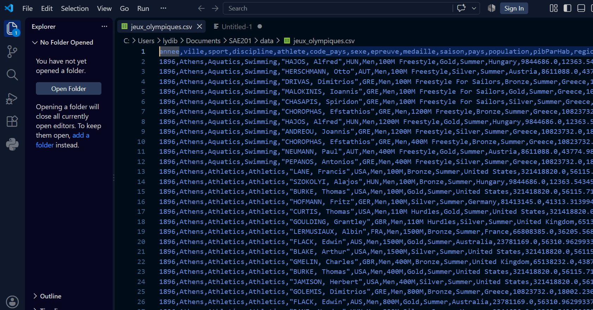

Dans le cadre de la SAE 2.01 (Conception et implémentation d'une base de données), nous avons simulé la situation d'un analyste de données chargé de structurer un jeu de données brut — jeux_olympiques.csv, généré à partir de sources Kaggle sur 120 ans de Jeux Olympiques (1896–2016) — en une base de données relationnelle interrogeable sous MySQL.
Construire un pipeline complet : nettoyage des données avec Pandas, conception d'un Modèle Conceptuel (MCD) puis Logique (MLD) et Physique (MPD) de Données, implémentation MySQL avec contraintes d'intégrité référentielle, alimentation par scripts Python transactionnels, puis exploration SQL selon quatre axes — performance sportive globale, égalité homme-femme, disparités géographiques et impact socio-économique.
La conception du MCD et du MLD a été un travail obligatoirement collectif : lors de la soutenance, chaque membre devait être capable de justifier individuellement les choix de modélisation, même sur les parties codées par les autres.

Le fichier source, tel que reçu
jeux_olympiques.csv — 17 colonnes brutes, avant tout nettoyage Pandas.
Projet réalisé en groupe de 3 : Yanh Bambela Mouanda, Selma Bennani, Drecy Mouele.